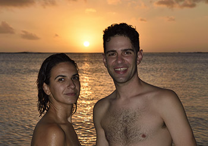

Javier García Martín & Andrea Tabernero Rey
Javier García Martín & Andrea Tabernero Rey  Javier García Martín & Andrea Tabernero Rey
Javier García Martín & Andrea Tabernero Rey 
This page is within a frameset. View the entire genealogy report of family Javier García Martín & Andrea Tabernero Rey, or surname index or report summary.
Introduction About Genealogy.
© 2006 GenoPro Inc. All Rights Reserved.